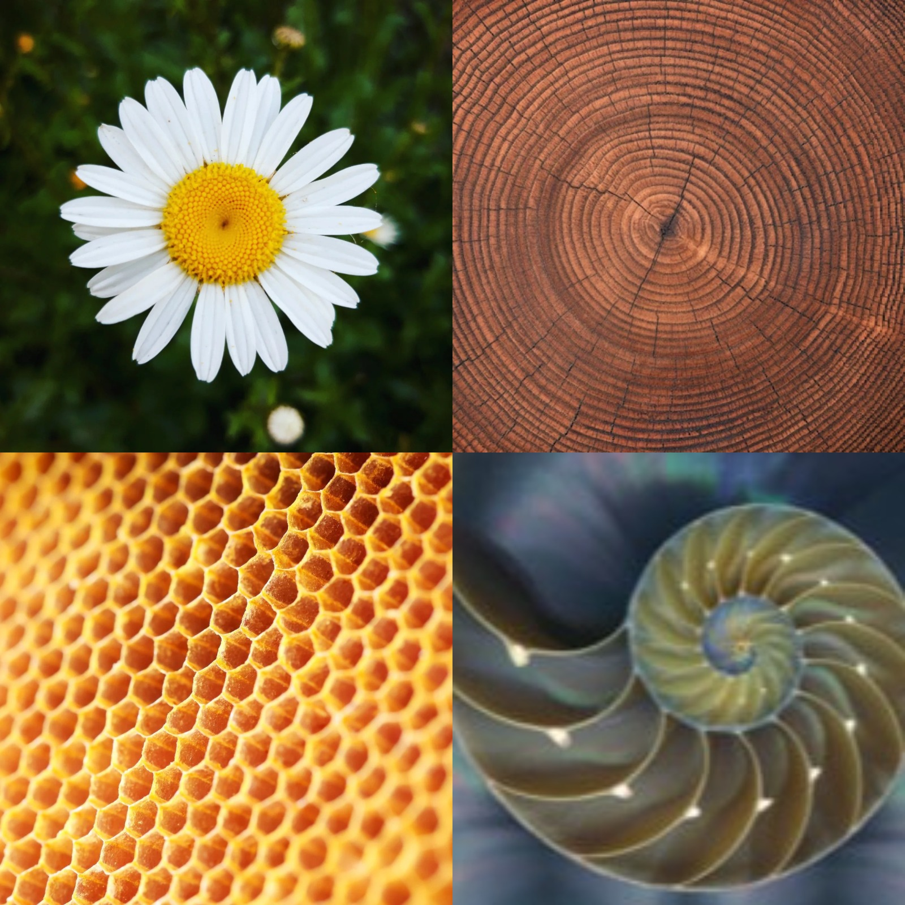

Sequences, series, and the mathematics of growth and form
Counting petals of a daisy or rings in a tree are pastimes we may recall from our childhood. Those games we played are hooks for asking deeper questions about the natural world, its history and how it works. As a species, our minds have evolved to find patterns and seek answers about them. As we explore nature more we muse about other regularities we see and hear, such as the branching patterns of ferns, the winding arrangement of pinecone seeds, the repetitive nature of bird calls, and the regular growth patterns of seashells, crystals, and leaves.
In this chapter, we will begin our exploration of nature's fascinating patterns, shapes, and forms by doing something simple: counting, measuring and tabulating the regularities we observe. We will look for patterns in the numbers we see. These number patterns will be nature's invitation to explore more deeply a branch of mathematics that deals with sequences and series of numbers in an effort to move beyond observation to predication and explanation. Making the connection between number patterns in nature will also open the door to powerful mathematical ideas that are beautiful and fascinating in their own right.
The natural and mathematical examples we meet in this chapter will become familiar friends that we will we will encounter again and again in different guises as we go deeper on our journey through nature and mathematics and ask deeper questions about what shapes and determines the patterns that we have enumerated and measured.

How do we know when there is a pattern underlying an observation rather than some chance occurrence. We can start by try to predict what comes next. In the process of making a prediction we are implicitly or explicitly forming a rule in our mind and seeing if the rule is correct. Sometimes nature might make clear what the rule is, but sometimes it is hidden and we need to dig deeper. We will start with four examples that are inspired by patterns that may be familiar. We'll try to make a prediction about what the next number in the pattern will be, without necessarily writing down a rule in mathematical form. We'll then see if it is possible to generalize. We'll then look at two more abstract examples for some cautionary advice about pattern guessing.
For each one: study the diagram, read the first three terms, then try to fill in the fourth, fifth, and sixth. Then ask yourself: what would the $n$-th term be?
The first three patterns — tree rings, tree branching, and the honeycomb, are governed by simple rules: add the same amount, multiply by the same factor, or add an amount that grows in a constant way. The orange pyramid is different: its differences themselves grow, making it a second-order pattern. In Section 2 we will give all four a precise mathematical description, starting with the idea of recursion.
The patterns for the four sequences above were perhaps unsurprising once the underlying source of the patterns was revealed. These next two are rooted in more abstract geometry rather than direct natural phenomena. Consider each one carefully before revealing the answer.
The surprises these last two examples reveal a lesson that every mathematician and scientist learns early: a pattern you observe without explanation or proof or physical law may be ephemeral.
For each of the six patterns above there is an underlying rule, shaped by the geometry or biology of the situation. For the first four the rule is relatively straightforward to discern once you know what to look for. The last two are not as readily forthcoming.
In Section 2 we build the mathematical language to describe, compare, and extend all these patterns — moving from notation and recursive descriptions, through the structure of arithmetic and geometric sequences, to sums and series, and finally to the question of what happens when a process runs indefinitely.
In this section we build that mathematical language we need to understand and explain number patterns from the ground up: first giving sequences a precise definition, then identifying the simple rules that generate the most common natural patterns, then asking what happens when we add them all up, and finally what happens when a process runs forever.
How can we describe change that happens in steps?
Every pattern in Section 1 was a list of numbers unfolding one step at a time: 7, 12, 17, … or 1, 2, 4, 8, … or 1, 1, 2, 3, 5, … The branch count at level 3, the honeycomb total after 2 rings, the radius of the tree after year 4 — each is a value associated with a specific step. Giving this idea a name and a notation is the first act of mathematics.
A sequence is an ordered list of numbers, one for each positive integer $n$. We write the terms as $a_1, a_2, a_3, \ldots$ and use subscript notation $a_n$ for the $n$-th term. The full sequence is often written $\{a_n\}$. Let's look at some of the examples in the explorations above
Either convention is used in mathematics and science, but in different contexts. Starting at $n=1$ feels natural when you are counting items or things (layer 1, layer 2, etc.). Starting at $n=0$ is often the convention when $n$ refers to time. The first value is the initial value (time=0), and the next value is the value after one time step. For the branch count $a_n=2^{n-1}$ if we include the the trunk as the first branch $a_1=1$. It could be written $a_n=2^n$ if we start with $n=0$ and $a_0=1$, is the initial condition before the trunk branches. In this chapter we will start at $n=1$ since we mostly deal with counting the number of things. In the next chapter, when we look at systems that change with time, we will start with $n=0$, since the first value is the initial state when time equals zero. The formulas will always tell you which convention is being used.
As mentioned above, there are two fundamentally different ways to define a sequence.
An explicit formula (also called a closed-form formula or general term) gives $a_n$ directly as a function of $n$, without reference to any other term. You can find the 100th term with one calculation.
A recursive formula (or recurrence relation or iterative formula) tells you how to get the next term from previous ones. You must know at least one starting value, and to find the 100th term you must compute all the ones before it. Recursive formulas are often the most natural description of how something actually grows or changes.
Explicit: $a_n = f(n)$ find any term directly from a formula or function $f$.
Recursive: $a_n = g(a_{n-1}, a_{n-2}, \ldots)$ with starting value(s) for the previous terms. Build each term from the last based on a formula or function $g$.
The explicit form is better for prediction; the recursive form is often closer to the physical process. It is not always possible to derive the explicit formula from the recursive one.
Let us write each of our four main sequences in both forms. This will reveal which is more natural — and which is harder to discover.
| Sequence | Recursive | Explicit |
|---|---|---|
| Tree rings (radius in mm) | $a_1=7,\ a_{n}=a_{n-1}+5$ | $a_n=7+5(n-1)$ |
| Tree branching (branches, starting with trunk) | $a_1=1,\ a_{n}=2\,a_{n-1}$ | $a_n=2^{n-1}$ |
| Honeycomb totals (cells) | $a_1=1,\ a_{n}=a_{n-1}+6(n-1)$ | $a_n=3n^2-3n+1$ |
| Cedar Fond (new scales) | $a_1=1$, $a_2=1$, $a_n=a_{n-1}+a_{n-2}$ | $a_n= \cdots \text{ TBD}$ |
| Orange pyramid (per layer) | $a_1=1,\ a_{n}=a_{n-1}+(2n-1)$ | $a_n=n^2$ |
Not every recursive sequence has a tidy closed form. Consider three important examples.
The triangular numbers $T_n$ count the total number of items in a triangular arrangement
$\{T_n\} = 1,3,6,10,15 \dots$ We get each term by adding one more than the previous time. The recursive description is simply
$$T_1 = 1, \qquad T_n = T_{n-1} + n$$The explicit formula is: $T_n = n(n+1)/2$ exists and its proof is elegant — but it takes a geometric insight.
The Fibonacci sequence $F_n$ is defined by two starting values and a rule that looks two steps back:
$F_1 = 1,\quad F_2 = 1,\quad F_n = F_{n-1} + F_{n-2}$
The sequence runs 1, 1, 2, 3, 5, 8, 13, 21, 34, 55, … The explicit formula exists, but it is far from obvious how to find it. Fibonacci numbers appear in phyllotaxis (the spiral counts in sunflowers and pinecones), in the growth of rabbit populations (the problem that motivated Fibonacci himself), and in a remarkable number of other natural structures. We will return to them in Section 3.
Factorials are a sequence defined recursively by:
$a_1=1$, and $a_n=n\,a_{n-1}$
So $a_1=1$, $a_2=2\times 1=2$, $a_3=3\times 2\times 1 = 6 $ and so on.
The factorial counts the number of ways to arrange $n$ objects in order and is usually expressed as $n!$:
$n!=1\times2\times3\times\cdots\times(n-1)\times n$
This is expression is not an explicit formula per se, it is just a short hand way of expressing the recursion. $n!$ grows so rapidly that it cannot be expressed as a simple power law; the best approximation is Stirling's formula $n! \approx \sqrt{2\pi n}\,(n/e)^n$, when is large, which involves $\pi$ and $e$ — an unexpected connection between combinatorics and the geometry of circles.
Look again at the four Section 1 sequences. A model for tree radius that grows by add the same amount every year. A model for branching that grows by multiplying by the same factor every level. These two structures — constant difference and constant ratio — are so common in nature that they have names, and their formulas are worth deriving in general and knowing for later reference.
A sequence is arithmetic if each term is obtained by adding a fixed amount $d$ (the common difference) to the previous term, starting from an first term $a$:
$a_{n+1} = a_n + d$ and $a_1=a$
Writing out the first several terms: $a,\ a+d,\ a+2d,\ a+3d,\ldots$ In the $n$-th term, $d$ has been added exactly $n-1$ times, giving the explicit formula:
Recursive: $a_{n} = a_{n-1} + d$, starting value $a_1=a$.
Explicit: $a_n = a + (n-1)d$.
The graph of an arithmetic sequence is a straight line: $a_n$ grows linearly in $n$.
Let's explore these formulas in the context of some natural examples:
Cross-section a healthy tree in a temperate climate and you see annual growth rings. In years with steady rainfall, ring widths are roughly equal: the tree adds approximately the same thickness $\delta$ of wood each year.
The cumulative radius after $n$ years follows an arithmetic sequences $r_n \approx r_h + (n-1)\delta$, where $r_h$ is the initial heartwood radius. Here $n=1$ corresponds to the radius of the heartwood, $r_h$, and $n=2$ corresponds to the first ring added, which is the second layer. In nature, the width of each ring isn't quite constant; drought years produce thinner rings, and moist years wider ones. Dendrochronology, the science of dating from tree rings, relies on the patterns of deviations from this norm to compare trees of different ages, including tree that died before scientists were around to count tree rings!
Slice a mature Moso bamboo culm (Phyllostachys edulis) lengthwise and measure the distance between successive nodes from the base upward. In the lower and middle sections of the culm — before growth begins to taper near the crown — the internode lengths increase by a nearly constant amount with each step. Field measurements of a mature culm give representative values of approximately 10, 14, 18, 22, 26, 30 cm for the first six internodes on the ascending portion: an arithmetic sequence with first term $a_1 \approx 10$ cm and common difference $d \approx 4$ cm.
The formula for the length of the $n$-th internode from the base is $\ell_n = 10 + 4(n-1)$ cm. The pattern is not perfect. As with tree rings drought years, crowding, and local variation all leave marks. It also only applies for the first few internodes at the base, further up the bamboo the spacing becomes more constant. We will return to this example in the next chapter when we look at dynamical systems -- to show how to improve this formula to the internodes over the whole culm.
Each internode is pre-formed inside the shoot, compressed like a spring, before the culm emerges. As the shoot rockets upward (Moso can grow over 1 metre per day), the lower internodes elongate first while the upper ones are still forming. The oldest (lowest) internodes had the least time to expand; each successive one had a little more. The result is an arithmetic gradient frozen in wood.
(a) Which internode has length exactly 30 cm?
Set $\ell_n = 30$ and solve for $n$:
The sixth internode from the base has length exactly 30 cm — consistent with the table of representative values listed above.
(b) What is the length of the 12th internode?
The 12th internode is 54 cm — over five times the length of the lowest one. This rapid lengthening reflects the biology: internodes higher on the culm had more time to elongate before the shoot hardened. Above roughly the 12th internode the pattern begins to taper, so the formula is a good model only for the lower ascending portion of the culm.
A primary flight feather carries hundreds of barbs branching from a central shaft (rachis). These barbs interlock via tiny hooks to form a flat, aerodynamic vane. The barb spacing — the gap between where successive barbs attach to the rachis — is not constant: it increases steadily from base to tip, forming an arithmetic sequence. The gradient is real but invisible to the naked eye; a microscope reveals it. The two zoom windows in the figure below make the difference visible. Region A, near the base, shows barbs separated by about 100 µm; Region B, mid-feather, shows the same four-barb view but with a gap of 340 µm — more than three times wider.
The base of a flight feather bears the greatest aerodynamic load during the downstroke; densely packed barbs interlock tightly, resisting separation under the high pressure differential between the upper and lower vane surfaces. Toward the tip, flexibility matters more than stiffness, and the wider spacing allows the feather to bend without breaking. We'll model the separation between barbs with an arithmetic sequence assuming there is a steady increment to the gap with every barb. Let's suppose there are 200 barbs between the first barb of the first image and the first barb of the second. We'll find the constant increment and expression for the sequence of gaps in this worked example below:
Setup. The two zoom windows tell us: Region A (near the base) has spacing $s_1 = 100$ µm; Region B (mid-feather) has spacing $s_{201} = 340$ µm. There are exactly 200 barbs between the two sampled positions — so the subscript of the second measurement is $201$.
Step 1: find $d$. Using the explicit formula $s_n = s_1 + (n-1)d$:
So the sequence of barb spacings is $100, 101.2, 102.4, \ldots$ µm — each barb is positioned $1.2$ µm further from the previous than its neighbor closer to the base.
Step 2: find where spacing reaches 400 µm. Set $s_n = 400$:
Barb number 251 has a spacing of exactly 400 µm from barb 252. Beyond this point, the vane becomes significantly more open — the feather structure is transitioning toward the flexible, slotted region near the tip that allows air to pass during the upstroke.
A sequence is geometric if each term is obtained by multiplying the previous by a fixed number $r$ (the common ratio), starting from an initial term :
$a_{n+1} = r \cdot a_n$ and $a_1=a$
Writing out terms the sequence is: $a,\ a r,\ a r^2,\ a r^3, \ldots$
In the $n$-th term, $r$ has been applied $n-1$ times, which gives:
Recursive: $a_{n+1} = r \cdot a_n$, starting value $a_1=a$.
Explicit: $a_n = a \cdot r^{n-1}$.
When $r > 1$ the sequence grows without bound. When $0 < r < 1$ it gets smaller decaying towards zero. When $r < 0$ the terms alternate in sign.
The geometric sequences are qualitatively different from arithmetic ones: instead of adding the same amount, you multiply or scale by the same factor. The result is growth that accelerates — or rapidly decays that. Let's look at some examples from nature:
Place a single E. coli bacterium in a warm, nutrient-rich environment. Every 20 minutes, it divides in two, creating two where there was one. The sequences is $1,2,4,8, \dots$, a geometric sequence with $a=1$ and $r=2$.
How many bacteria are there after 8 hours (480 min)? The number of 20-min intervals in 480 minutes is $n = 24$, so $a_{24} = 2^{23} = 8{,}388{,}608 \approx 8.4$ million. If instead the bacteria grew arithmetically — adding one cell every 20 minutes — we'd have just 25 after 8 hours. In the case of infectious disease this could be the difference between manageable inoculation and a full fledged fever!
Imagine a sequence of geometrically similar chambers arranged in an equiangular spiral. The seed chamber is a right triangle with base 2, height$\sqrt{5}$ and hypotenuse 3. (Pythagoras's Theorem: $2^2 + (\sqrt{5})^2 = 9 = 3^2$ .) Each new chamber is built from the previous by two steps: scale by $\tfrac{3}{2}$, then place the right angle of the scaled copy at the acute-angle vertex of the previous chamber, with the new base running exactly along the previous hypotenuse.
Because each chamber is a scaled copy of the previous by $r = \tfrac{3}{2}$, the base of each chamber forms a geometric sequence.
$b_1 = 2, \quad b_2 = 3, \quad b_3 = \tfrac{9}{2}, \quad b_4 = \tfrac{27}{4}, \quad \ldots$
The general formula is:
The corresponding hypotenuse of chamber $n$ is $h_n = 3 \cdot \bigl(\tfrac{3}{2}\bigr)^{n-1}$, which we can see is $\frac{3}{2}b_n=b_{n+1}$ , confirming that the base of each new chamber fits perfectly onto the hypotenuse of the one before it.
The human circulatory system is a branching tree: the aorta divides into major arteries, which divide into smaller arteries, then arterioles, then capillaries. At each generation of branching the vessels narrow — and their diameters follow a precise geometric sequence.
In 1926, Cecil Murray created a model for a branching network is to minimize the energy cost of pumping blood while keeping every vessel wall under uniform stress, the diameters must satisfy a simple rule. For symmetric binary branching (each vessel splits into two equal daughters), Murray's Law requires:
$d_{\text{parent}}^3 = 2\,d_{\text{daughter}}^3 \quad \Longrightarrow \quad \frac{d_{\text{daughter}}}{d_{\text{parent}}} = 2^{-1/3} \approx 0.794$
Each generation, every vessel is about 79% the diameter of the one above — a geometric sequence with ratio $r = 2^{-1/3}$.
The sequence of diameters at successive generations is $25,\ 19.8,\ 15.7,\ 12.5,\ \ldots$ mm . This is a decaying geometric sequence: the previous multiplied by $r = 2^{-1/3}\approx 0.794$. The formulas is $d_n=25(2^{-1/3})^{n-1}=25\frac{1}{2^{3n-3}}$
The aorta has diameter 25 mm. Arterioles feeding capillary beds have diameters around 0.02 mm. Assuming Murray's Law with ratio $r = 2^{-1/3}$, how many branching generations separate them?
Answer: We need $25 \times (2^{-1/3})^{n-1} = 0.02$, so $(2^{-1/3})^n = 8 \times 10^{-4}$. Taking logarithms: $n = 1+ \frac{\ln(8 \times 10^{-4})}{\ln(2^{-1/3})} = \frac{-7.13}{-0.231} \approx 32$ generations of branching. Because real branching is asymmetric and vessel sizes vary anatomical measurements give 23 generations in practice.
What if neither the difference nor the ratio is constant? Many natural processes fit a rule that combines both: each term is a fixed multiple of the previous, plus a constant amount. This is the linear recurrence:
$a_{n+1} = r \cdot a_n + d$
When $r = 1$ it reduces to arithmetic. When $d = 0$ it reduces to geometric. Both are special cases of a single, more general rule.
Arithmetic sequences satisfy $a_{n+1} = a_n + d$ (add a constant, $r=1$). Geometric sequences satisfy $a_{n+1} = r \cdot a_n$ (multiply by a constant, $d=0$). Both are special cases of the linear recurrence:
$x_{n+1} = r x_n + d$
When $r=1$ you get arithmetic; when $d=0$ you get geometric. What happens when both $r\neq 1$ and $d\neq 0$? The sequence is neither arithmetic nor geometric — but it still has a beautiful structure, and it occurs throughout nature. We will explore this sequence more completely in the next chapter.
We have described what happens at each step in a sequence, but many important quantities are totals built from many step-by-step contributions. For example the total height of a bamboo culm, the total number of honeycomb cells, the total area of a chambered spiral. Adding up the terms of a sequence gives a series.
A series is the sum of the terms of a sequence. We define the sum of the first $n$ terms of a series the $n$-th partial sum:
$$S_n = a_1 + a_2 + \cdots + a_n$$
Mathematicians often express the sum of the first $n$ terms of a sequence $\{a_k\}$in short form using the capital Greek letter sigma:
This should be read as "the sum of $a_k$ as $k$ runs from 1 to $n$." The letter $k$ is a dummy index or a placeholder that could equally be called $i$, $j$, or any other letter. The notation is a compact way to write a longer series. For example $\sum_{k=1}^{100} k$ means $1 + 2 + 3 + \cdots + 100$.
$\sum_{k=1}^{5} k^2 = 1 + 4 + 9 + 16 + 25 = 55$.
$\sum_{k=0}^{n} 2^k = 1 + 2 + 4 + \cdots + 2^n $.
The index can start anywhere: $\sum_{k=3}^{6} k = 3+4+5+6 = 18$.
A constant factor can be pulled out: $\sum_{k=1}^{n} 5k = 5\sum_{k=1}^{n} k$.
And sums can be split: $\sum_{k=1}^{n}(a_k + b_k) = \sum a_k + \sum b_k$.
Sigma notation is a convenient short hand for the step by step sum of all the terms that can be helpful when manipulating series to learn their properties. However, what we often want is to derive explicit formulas for $S_n$.
Consider the sum of the first $n$ terms of an arithmetic sequence with first term $a$ and common difference $d$. Write the sum forward, then write it again in reverse:
$\begin{array}{rcccccccc} S_n &=& a &+& (a+d) &+& \cdots &+& (a+(n-1)d) \\ S_n &=& (a+(n-1)d) &+& (a+(n-2)d) &+& \cdots &+& a \end{array}$
Now add the two rows together. Each column gives the same sum: first term plus last term, $a_1 + a_n = 2a + (n-1)d$. There are $n$ such columns, so:
$$2S_n = n(a_1 + a_n) \quad \Longrightarrow \quad \boxed{S_n = \frac{n}{2}(a_1 + a_n)}$$
The $n$-th partial sum of an arithmetic sequence with first term $a$ and common difference $d$ is:
The proof above is borrowed from Gauss, which reportedly used it at age 10, when his teacher asked the class to sum $1 + 2 + \cdots + 100$. He saw that $1 + 100 = 101$, $2 + 99 = 101$, and so on — fifty such pairs, giving $50 \times 101 = 5{,}050$.
Bamboo culm length. The internode lengths on the ascending portion of a Moso bamboo culm are $\ell_1 = 10$ cm, $\ell_2 = 14$ cm, $\ldots$ This is arithmetic with $a_1 = 10$ and $d = 4$, so $\ell_n=10+4(n-1)$. The total culm height after $n$ internodes is the arithmetic series:
$$\begin{eqnarray}L_n &=& \frac{n}{2}(\ell_1+\ell_n)= \frac{n}{2}(10 + 10 + 4(n-1)) \\&=& \frac{n}{2}(20 + 4(n-1)) \\&= &n(10 + 2(n-1))= 2n^2 + 8n \end{eqnarray}$$
A culm with 15 internodes on its ascending section has total height $L_{15} = 2(15^2) + 8(15) = 450 + 120 = 570$ cm $= 5.7$ m. Notice that even though each internode is only arithmetically longer, the cumulative height grows as $n^2$. This is the signature of summing an arithmetic sequence: the answer is always one polynomial degree higher than the terms being summed.
Triangular numbers. Consider oranges arranged in a triangular pattern with row sizes, $1, 2, 3, \ldots, n$. This is an arithmetic sequence with $a_1 = 1$ and $a_n = n$. Total oranges after $n$ rows is the sum of the oranges in each row. These are the triangle numbers $T_n$. Using the formula for the sum of an arithmetic sequene, we get.
$$T_n = \frac{n}{2}(1 + n) = \frac{n(n+1)}{2} \qquad \Rightarrow \quad 1,\; 3,\; 6,\; 10,\; 15,\; 21, \ldots$$
Bowling uses $T_4 = 10$ pins. Gauss's sum $1 + 2 + \cdots + 100 = T_{100} = 5{,}050$.
Honeycomb rings. Ring $k$ has $6k$ cells, so the ring sizes $6, 12, 18, \ldots, 6m$ are arithmetic with $a_1 = 6$ and $d = 6$. Sum of the first $m$ ring sizes:
$$\frac{m}{2}(6 + 6m) = 3m(m+1) = 3m^2 + 3m$$
Adding the central cell: $H_m = 3m^2 + 3m + 1$. Check: $H_3 = 27 + 9 + 1 = 37$ ✓ (the diagram shows 37 cells through 3 rings).
Tree ring area. A tree adds constant width $\delta$ per year. The area of the $k$-th annual ring is approximately $A_k \approx 2\pi k\delta^2$. This arithmetic with $d = 2\pi\delta^2$. The total cross-sectional area after $n$ years:
$$S_n = \sum_{k=1}^n 2\pi k\delta^2 = 2\pi\delta^2 \cdot \frac{n(n+1)}{2} = \pi\delta^2 n(n+1)$$
Even though each ring is only arithmetically thicker, the total area grows as $n^2$ — one polynomial degree higher.
A researcher measures a peregrine falcon primary feather. The barbed portion of the rachis spans 125 mm in total. A microscope at the base gives a barb spacing of $s_1 = 100$ µm; a measurement at the very tip gives $s_N \approx 400$ µm. How many barbs are there, and what is the common difference $d$?
Setting up two equations. The barb spacings form an arithmetic sequence $s_1, s_2, \ldots, s_N$. Two facts are known:
Step 1 — find $N$. Using the arithmetic series formula with $s_1 = 100$ µm, $s_N = 400$ µm, and $S_N = 125\,000$ µm:
Step 2 — find $d$. Using the tip-spacing formula:
The full barb-spacing sequence runs from 100 µm at the base to 400 µm at the tip, climbing by about 0.6 µm per barb — an increment so small that only the cumulative effect over 500 barbs becomes perceptible. Notice how the measurement strategy changed here: instead of locating two microscope windows and counting barbs between them (as in Section 2.2), we used the total rachis length and the two endpoint measurements to determine both $N$ and $d$ from the series formula. The two methods are complementary: whichever quantities are easiest to measure in the field, the arithmetic sequence and series framework connects them all.
| Pattern | Sequence (added per step) | Running total after $n$ steps | Formula for sum $S_n$ | Name |
|---|---|---|---|---|
| Bamboo internodes | $10, 14, 18, 22, \ldots$ cm | $10, 24, 42, 64, \ldots$ cm | $2n^2 + 8n$ | Culm height (cm) |
| Sum of positive integers | $1, 2, 3, 4, \ldots$ | $1, 3, 6, 10, 15, \ldots$ | $n(n+1)/2$ | Triangular numbers |
| Honeycomb rings | $6, 12, 18, 24, \ldots$ | $1, 7, 19, 37, 61, \ldots$ | $3n^2 - 3n + 1$ | Hexagonal numbers |
| Crystal rings | $4, 8, 12, 16, \ldots$ | $1, 5, 13, 25, 41, \ldots$ | $2n^2 - 2n + 1$ | Centered square numbers |
Now for a geometric series. Consider:
$S_n = a + ar + ar^2 + \cdots + ar^{n-1}$
To find the sum consider this pattern. If we multiply every term by $r$ we get:
$rS_n = ar + ar^2 + ar^3 + \cdots + ar^n$
Now, if we subtract the second line from the first. Comparing term by term, nearly every term cancels. Just the first term of the first line and last term of the second remain.:
$S_n - rS_n = a - ar^n$
$(1-r)S_n = a(1-r^n)$
$$\boxed{S_n = \frac{a(1-r^n)}{1-r}} \qquad (r \neq 1)$$
Triangle chambered shell.
We return to the right-triangle spiral from Section 2.2. The same six chambers are shown again.
The seed triangle has base 2 and height $\sqrt{5}$, so its area is $A_1 = \tfrac{1}{2} \times 2 \times \sqrt{5} = \sqrt{5}$. Each chamber has both base and height scaled by $\tfrac{3}{2}$ from the previous, so its area scales by $\left(\tfrac{3}{2}\right)^2 = \tfrac{9}{4}$. This is the common ratio for the growth of the area -- giving the area of the -th cell as:
For the first six chambers: $A_1 \approx 2.24,\; A_2 \approx 5.03,\; A_3 \approx 11.3,\; A_4 \approx 25.5,\; A_5 \approx 57.3,\; A_6 \approx 128.9$ square units.
The total area of the first $n$ chambers uses the geometric partial-sum formula with $a = \sqrt{5}$ and $r = \tfrac{9}{4}$:
For $n = 6$: $S_6 \approx 1.789 \times 128.76 \approx 230$ square units. Chamber 6 alone contributes $\approx 129$ — just over half.
Tree branching. Consider the branching tree from our earlier example, but instead of asking about the number of branches, we ask about the total length of all the branches. Let the length of the trunk be $5$ m and suppose each branch produces 2 daughters each 45% of the parent's length. Then the total amount of wood when there are $n$ branchings is:
$$ \begin{eqnarray}S_n&=&5+5(0.45)(2)+5(0.45)^2 2^2+\dots \\&=&5+5(0.9)+5(0.9)^2+\cdots\end{eqnarray}$$
which is a geometric series with $a=5$ and $r=0.9$. The total through $n$ levels is:
$$S_n = 5 \cdot \frac{1 - 0.9^n}{1 - 0.9} = 50(1-0.9^n)$$
After 5 levels: the total length of wood is $S_5 = 50(1 - 0.9^5) = 50 \times 0.41 \approx 20.5$ m of wood. After 10 levels: $S_{10} \approx 50 \times 0.65 = 32.5$ m.
If we continue we will see that the total approaches a limiting value. Finding that limit brings leads us to the next section.
We have seen that some natural patterns are described by sequences or series that grow steadily or exponentially and grow without bound. But a tree doesn't add rings forever; and a seashell that grows geometrically initially can't grow forever. In natural processes some other constraint will typically come into play to change the pattern to limit this growth. A good model will capture the true behavior. As we will see, other behaviors are also possible; they can oscillate or even become chaotic. Understanding which outcome occurs — and why — is one of the central questions of mathematical analysis.
In this section we will explore some sequences and series that settle closer and closer towards a constant value the larger you take $n$. We call this the limit of the sequence or series, $L$. We'll look at other kinds of behavior in the next chapter.
Consider the geometric series from the previous section
$$\boxed{S_n = \frac{a(1-r^n)}{1-r}} \qquad (r \neq 1)$$
What happens as $n \to \infty$? When $|r| < 1$, the term $r^n$ shrinks toward zero:
$r^n \to 0 \quad \text{as} \quad n \to \infty$
So the finite sum formula gives a finite limit:
$$\boxed{S_\infty = \lim_{n\to\infty} \frac{a(1-r^n)}{1-r} = \frac{a}{1-r}} \qquad (|r| < 1)$$
When $|r| \geq 1$ the terms never shrink, and the sum grows without bound. The condition $|r| < 1$ is essential. For the tree example: $S_\infty = \frac{5}{1 - 0.9} = 50$ m. The tree accumulates at most 50 m of total branch length, no matter how many levels it grows.
Let's look at a few other examples:
At its peak a young forest absorbs $a = 2$ tonnes of carbon per hectare, then the rate of sequestration each year falls off. Suppose each subsequent year it absorbs 95% of the previous year's amount, as the forest approaches maturity and carbon uptake saturates. What's the total carbon absorbed over the forest's after the forest reaches its peak? This is an infinite geometric sequences with $a=2$ and $r=0.95$ so the total is:
$$S_\infty = \frac{2}{1-0.95} = \frac{2}{0.05} = 40 \text{ tonnes per hectare}$$
As a worked comparison: after 10 years the forest has absorbed $S_{10} = \frac{2(1-0.95^{10})}{0.05} = 40(1 - 0.599) \approx 16$ tonnes. After 30 years: $S_{30} = 40(1-0.95^{30}) \approx31$ tonnes -- just over 75% of the remaining amount it will absorb. As a very mature old growth forest appears to absorb almost nothing year-to-year. This is because as much carbon as the trees absorbs is released by trees that have died and are decomposing.
A rubber ball dropped from 1 meter rises to $\frac{3}{4}$ of its previous height at each bounce. The distances traveled — one down, then alternating up and down — form a geometric series with $r = \frac{3}{4}$.
Setting up the sum: the ball falls 1 m, then makes infinitely many up-and-down bounces. The $k$-th bounce covers $2 \cdot \left(\frac{3}{4}\right)^k$ meters (up and back down). So the total distance is:
$$\begin{eqnarray} D &=& 1 + \sum_{k=1}^{\infty} 2\left(\frac{3}{4}\right)^k = 1 + 2 \cdot \frac{3/4}{1-3/4}\\ &=& 1 + 2 \cdot \frac{3/4}{1/4} = 1 + 6 = \mathbf{7}\text{ meters}\end{eqnarray}$$
A ball dropped from 1 meter travels 7 meters before coming to rest.
Let's take a look at the Fibonacci numbers and calculate the ratio of each term to for increasing values of $n$
| $n$ | $F_n$ | $F_n / F_{n-1}$ |
|---|---|---|
| 2 | 1 | 1.0000 |
| 4 | 3 | 1.5000 |
| 6 | 8 | 1.6000 |
| 8 | 21 | 1.6154 |
| 10 | 55 | 1.6176 |
| 12 | 144 | 1.6180 … |
The ratios converge to a fixed value. It turns out this a special number called the golden ratio $\varphi = \frac{1+\sqrt{5}}{2} \approx 1.618$. How do we show this?
Suppose the ratio converges to some limit $L$, then for large $n$, $F_n \approx L F_{n-1}$, and $F_{n-1}=LF_{n-2}$. Substituting into $F_n = F_{n-1} + F_{n-2}$ and dividing through gives $L = 1 + 1/L$, which gives $L^2 - L - 1 = 0$. This quadratic equation has positive solution is $\varphi$. The golden ratio is not imposed on the Fibonacci sequence — it emerges from the recursive rule. We will see the golden ratio again in future chapters.
Define a sequence defined recursively as:
$$a_1 = 1, \,\,\, a_{n+1} = \sqrt{1 + a_n}\,\,.$$ The terms: $$\begin{eqnarray} && 1, \sqrt{1+1}, \sqrt{1+\sqrt{1+1}}, \ldots \\ &=& 1, 1.414, 1.554, 1.598, 1.612, 1.617, 1.618 \ldots \end{eqnarray}$$appear to converge to a limit $L$, which is also $\varphi$. You can show this by taking $a_n\to L$ in the above recursion relation and solving the resulting equation: $$L = \sqrt{1+L} \quad \implies \quad L^2 = 1 + L$$which is the same quadratic as above, so we get $L = \varphi$ again. The golden ratio appears as the limit of an infinite nested radical..
For any recursion $x_{n+1} = rx_n + d$ with $|r| < 1$, the sequence converges to $x^* = d/(1-r)$. You can find it without iterating: just set $x^* = rx^* + d$ (a fixed point satisfies its own rule) and solve. This is the mathematical expression of the system reaching equilibrium. The closer $r$ is to 1, the more slowly it converges; the closer to 0, the faster.
Many climbing plants — ivy, Clematis, bindweed — produce internodes that shorten progressively from the base toward the growing tip, but never below a structural minimum required to carry the vascular bundle. A good model for the $n$-th internode length (counting from the base) is:
$\ell_1 = 80 \text{ mm}, \qquad \ell_{n+1} = 0.85\,\ell_n + 3$
Here $r = 0.85$ (each new internode is 85% of the one below) and $d = 3$ mm (a minimum increment from the vascular floor). This is $x_{n+1} = rx_n + d$ with both constants active.
The sequence runs: 80, 71, 63.4, 56.9, 51.4, 46.7, $\ldots$ The terms are decreasing — but are they approaching zero? No. To find the limit, set $\ell^* = 0.85\,\ell^* + 3$ and solve:
$\ell^*(1 - 0.85) = 3 \implies \ell^* = \frac{3}{0.15} = 20 \text{ mm}$
The sequence converges to a fixed point of 20 mm — the minimum functional internode length. Every plant with this recursion rule, regardless of starting value, gradually approaches the same fixed-point length. The fixed point of $x_{n+1} = rx_n + d$ is always $x^* = d/(1-r)$, and for $|r| < 1$ it is always stable.
A patient takes a 200 mg tablet of a medication every 12 hours. Between doses, the body eliminates a fixed fraction of the drug: suppose the retention fraction is $r = 0.60$ per 12-hour interval (meaning 40% is cleared each half-day). Let $C_n$ be the amount of drug in the body just after the $n$-th dose. Then:
$C_1 = 200, \qquad C_{n+1} = 0.60\,C_n + 200$
Here $r = 0.60$ (retention) and $d = 200$ mg (each new dose). The fixed point is:
$C^* = \frac{200}{1 - 0.60} = \frac{200}{0.40} = 500 \text{ mg}$
No matter how much drug the patient started with, the amount in their body converges to 500 mg just after each dose. This is the steady-state concentration — the value that pharmacists calculate when designing dosing regimens.
The fixed point has immediate medical meaning. A concentration below the therapeutic window means the drug is ineffective; above it risks toxicity. The steady-state formula $C^* = d/(1-r)$ tells the pharmacist exactly what will happen after many doses, without having to simulate each one individually. The same calculation applies to caffeine, antibiotics, blood pressure medications — any drug taken on a regular schedule.
A patient takes 300 mg every 24 hours of a drug with a 24-hour retention fraction of 0.55. What is the steady-state concentration? $C^* = 300/(1-0.55) = 300/0.45 \approx 667$ mg. If the toxic threshold is 800 mg, is this regimen safe? Yes — with a margin of about 130 mg. If the prescriber raises the dose to 400 mg, the new steady state is $400/0.45 \approx 889$ mg — above the toxic threshold. The fixed-point formula is a quick safety check before any dose change.
Sections 1 and 2 showed us number patterns hiding in nature and in sequences. This section goes beneath the surface to ask why those patterns have the shapes they do. The four subsections below can each be read independently; together they form a toolkit for understanding particular sequences at a deeper level. Each closes with project ideas for further exploration.
The ancient Greeks discovered that some numbers have shape. Arrange pebbles on a flat surface and count how many you need to build equilateral triangles, squares, pentagons, hexagons — the resulting sequences carry geometric information directly in their arithmetic. These are the figurate numbers. Each family is built from the same idea: start with a seed dot and repeatedly attach a gnomon of new dots to grow the shape by one step, while keeping the shape the same. Studying the gnomons reveals the formulas and comparing gnomons across families ties different polygonal number together in interesting and sometimes surprising ways.
The $n$-th triangular number $T_n$ counts the dots in a triangular array with $n$ rows, row $k$ containing $k$ dots. $$T_n=1+2+3+ \dots + n.$$The gnomon at step $n$ is simply a new bottom row of $n$ dots, as shown in the diagram below, giving the recursive definition: $$T_n=T_{n-1}+n.$$
In Section 2.3 we derived the explicit formula $T_n$, as the arithmetic series $1+2+3+\dots + n$ with first term 1 and $n$-th term $n$, giving $$T_n=\frac{n(n+1)}{2}.$$
By construction of the figures the triangle numbers are:
$$T_n=1+2+3+4+\dots+ n$$
resulting in the sequence: $1,3,6,10,15,21,\dots$
Recursive Definition: $$T_n=T_{n-1}+n, \,\, \text{with}\,\, a_1=1$$ Explicit Formula: $$T_n \;=\; \frac{n(n+1)}{2}$$
Geometric Proof: There is a nice geometric proof of this formula. Place two copies of the $T_n$ dot-triangle side by side, the second rotated 180°, as in the example in the figure below. Together they create an $n \times (n{+}1)$ rectangle of $n(n+1)$ dots in total. So $2T_n = n(n+1)$, giving the formula. The construction for $T_4$ is shown below:
The $n$-th square number $S_n = n^2$ counts dots arranged in an $n \times n$ square. The gnomon at step $n$ is an L-shaped border with $2n-1$ new dots (a right column of $n$ dots plus a bottom row of $n-1$ dots), thus $S_n=S_{n-1}+2n-1$.
The gnomon sequence $1, 3, 5, 7, \ldots$ is just the odd numbers, so the square numbers are sums of successive odd numbers:
$$S_n \;=\; n^2 \;=\; 1 + 3 + 5 + \cdots + (2n-1)$$
There is also a beautiful connection back to triangular numbers. Splitting a square grid along its diagonal shows that every square number is the sum of two consecutive triangular numbers:
$$n^2 \;=\; T_n + T_{n-1}$$
Geometric proof for 4x4 square number:
Algebraic proof: $$T_n + T_{n-1} = \frac{n(n+1)}{2} + \frac{(n-1)n}{2} = \frac{n(n+1+n-1)}{2} = n^2$$
The sequences is just the square numbers: $$1,4,9,16, \dots\, , \,\, \text{or} \,\,\, 1,2^2,3^2,4^2,\dots\, $$ which as we see can be expressed as the sum of the first $n$ odd numbers: $$S_n=1+3+5+7+\dots+(2n-1)$$
Recursive Formula:
Explicit Formula:
Relation to Triangular Numbers:
The pentagonal numbers are created by making a nested set of regular pentagons, all sharing the top vertex as the seed. The $n$-th pentagonal number $P_n$ has a U-shaped gnomon with left and right side of $n$ dots, and $n-2$ dots on the bottom, adding $2n+n-2=3n-2$ dots, giving the recursive definition: $$P_n=P_{n-1}+3n-2\,.$$
To find the explicit formula note the series of gnomons $$1+4+7+10 \dots+3n-2$$is arithmetic with first term 1, common difference 3, and $n$-term $3n-2$, so using the formula for the sum of an arithmetic sequence from Section 2.3, $$P_n=\frac{n(1+3n-2)}{2}=\frac{n(3n-1)}{2}$$
There is also a nice connection between the pentagonal numbers and the triangular numbers. The figure for the pentagonal number $P_n$ decomposes into three triangular number figures, one of $T_n$ and two of $T_{n-1}$, so $P_n = T_n + 2T_{n-1}$ as illustrated in the diagram below for $P_4$.
Algebraic Proof:
$$\begin{eqnarray} T_n + 2T_{n-1} &=& \frac{n(n+1)}{2} + 2\cdot\frac{(n-1)n}{2} \\ &=& \frac{n(n+1+2n-2)}{2} \;=\; \frac{n(3n-1)}{2}\;=\;P_n\end{eqnarray}$$
By construction of the figures the pentagonal numbers are:
$$P_n=1+4+7+10+\dots+ 3n-2$$
resulting in the sequence: $1,5,12,22,\dots$
Recursive Formula:
Explicit Formula:
Relation to Triangular Numbers:
The hexagonal numbers are created by making a nested set of regular hexagons all sharing the top vertex as the seed. The $n$-th hexagonal number $H_n$ has a U-shaped gnomon with 4 sides of $n-1$ dots, and one additional dot on the lower vertex, adding $4(n-1)+1=4n-3$ dots. This gives the recursive definition: $$H_n=H_{n-1}+4n-3\,.$$
By construction of the figure:
$$H_n=1+5+9+13+\dots+ 4n-3$$
Resulting in the sequence: $1,6,15,28,\dots$
Recursive Formula:
Explicit Formula:
Relation to Triangular Numbers:
or, more strikingly, every hexagonal numbers is equal to every other triangle number:
The proofs of the above relations follow a similar process to earlier ones. We generalize below for $k$-gonal numbers.
Looking across all four families, the gnomon at step $n$ always takes the form $(k-2)(n-1)+1$, where $k$ is the number of sides. By construction this can be understood as adding dots for $k-2$ sides of $n-1$ dots to the 2 existing sides, and one lower vertex to connect them. If we define $P(k,n)$ as the polygon wit $k$ sides ($k$-gon), then the recursive formula is: $$P(k,n)=P(k,n-1)+(k-2)(n-1)+1$$
The explicit formula for $P(k,n)$ follows directly from summing the arithmetic sequence of gnomons: $$P(k,n)=\frac{n(1+(k-2)(n-1)+1)}{2}=\frac{n[(k-2)n+k-4]}{2}$$
| Shape ($k$ sides) | Gnomon at step $n$ | Formula $P(k,n)$ | First terms |
|---|---|---|---|
| Triangle ($k=3$) | $n$ | $\tfrac{n(n+1)}{2}$ | 1, 3, 6, 10, 15, … |
| Square ($k=4$) | $2n-1$ | $n^2$ | 1, 4, 9, 16, 25, … |
| Pentagon ($k=5$) | $3n-2$ | $\tfrac{n(3n-1)}{2}$ | 1, 5, 12, 22, 35, … |
| Hexagon ($k=6$) | $4n-3$ | $n(2n-1)$ | 1, 6, 15, 28, 45, … |
| $k$-gon | $(k-2)(n-1)+1$ | $\dfrac{n[(k-2)n-(k-4)]}{2}$ | … |
The connection to the triangular numbers follow by summing the terms of the series and remembering definition of the triangular numbers $$T_n=\sum_{j=1}^n j\; ,$$ so
$$P(k,n) \;=\; \sum_{j=1}^n \bigl[(k-2)(j-1)+1\bigr] \;=\; (k-2)\,T_{n-1} + n$$
Then, since $n = T_n - T_{n-1}$, this gives the central theorem of the section:
$$P(k,n) \;=\; T_n\;+\; (k-3)\,T_{n-1} $$
Every $k$-gonal number is a sum of $(k-3)$ copies of $T_{n-1}$ and one copy of $T_n$. Triangular numbers ($k=3$) add zero copies; squares add one (recovering $T_{n-1}+T_n = n^2$); pentagons add two; hexagons add three. The triangular numbers are not just one entry in this table — they are the arithmetic building block of all the others.
Project A — Gnomon arithmetic. Use the gnomon formula $(k-2)(n-1)+1$ to derive $P(k,n) = \tfrac{n[(k-2)n-(k-4)]}{2}$ by summing the arithmetic progression. Then verify the identity $P(k,n) = (k-3)T_{n-1} + T_n$ algebraically, substituting the formula for $T_n$.
Project B — Gauss's EUREKA. In 1796 Gauss wrote "EUREKA! num = Δ + Δ + Δ" in his diary, meaning every positive integer is a sum of at most three triangular numbers. Verify this for all integers 1–40. Which integers require all three triangular summands?
Project C — Polygonal number theorem. Fermat conjectured (and Cauchy proved in 1813) that every positive integer is a sum of at most $k$ $k$-gonal numbers. For pentagonal numbers (1, 5, 12, 22, 35, …), verify the statement experimentally for integers up to 50. How many pentagonal numbers are typically needed?
Project D — Hexagonal triangular numbers. Since $H_n = T_{2n-1}$, every hexagonal number is triangular. But some numbers are both $H_n$ for some $n$ and $T_m$ for a different $m$ — that is, they appear in two different positions in the triangular sequence. Find the first three such "doubly triangular hexagonals". (Hint: solve $n(2n-1) = m(m+1)/2$ for integer pairs $(n,m)$.)
The gnomon idea extends naturally into three dimensions. Instead of adding a border of dots to a flat polygon, we stack triangular layers of balls into a pyramid. The running totals — the number of balls in the whole pyramid — are the three-dimensional analogues of the triangular numbers, and the pattern continues without limit into four, five, and any number of dimensions.
Stack triangular layers one on top of another: one ball, then a three-ball triangle, then a six-ball triangle, and so on. The running total after $n$ layers is the $n$-th tetrahedral number $T\!e_n$, which counts the balls in a triangular pyramid with $n$ layers.
Because each new layer is a triangular number, the tetrahedral numbers are the partial sums of the triangular numbers:
$$T\!e_n \;=\; \sum_{k=1}^{n} T_k \;=\; T_1 + T_2 + \cdots + T_n$$
And just as the triangular numbers are the partial sums of the counting numbers ($T_n = \sum k$), the tetrahedral numbers are the partial sums of the triangular numbers — one step further up the same hierarchy.
We can derive the formula by substituting $T_k = k(k+1)/2$:
$$\begin{eqnarray}T\!e_n&=& \sum_{k=1}^{n} \frac{k(k+1)}{2} = \frac{1}{2}\!\left(\sum_{k=1}^{n}k^2 + \sum_{k=1}^{n}k\right) \\&=& \frac{1}{2}\!\left(\frac{n(n+1)(2n+1)}{6} + \frac{n(n+1)}{2}\right)\\ &=&\frac{n(n+1)}{4}\left(\frac{2n+4}{3}\right) = \frac{n(n+1)(n+2)}{6}\end{eqnarray}\,$$ in which we use the identity $$\sum_{k=1}^nk^2=\frac{n(n+1)(2n+1)}{6}\; ,$$ which you are invited to prove in the project section below.
$$T\!e_n\;=\; \frac{n(n+1)(n+2)}{6} \;=\; \binom{n+2}{3}$$
Sequence: 1, 4, 10, 20, 35, 56, … The formula $\binom{n+2}{3}$ is a binomial coefficient.
The same stacking idea works in any dimension: the $k$-dimensional simplex numbers count the balls in a $k$-dimensional triangular pyramid. Each sequence is the partial sums of the previous one, and each formula is one binomial coefficient further along.
| Dim | Name | Formula | Sequence |
|---|---|---|---|
| 1 | Counting | $\binom{n}{1} = n$ | 1, 2, 3, 4, 5, … |
| 2 | Triangular | $\binom{n+1}{2}=\frac{n(n+1)}{2}$ | 1, 3, 6, 10, 15, … |
| 3 | Tetrahedral | $\binom{n+2}{3}=\frac{n(n+1)(n+2)}{6}$ | 1, 4, 10, 20, 35, … |
| 4 | Pentatope | $\binom{n+3}{4}=\frac{n(n+1)(n+2)(n+3)}{24}$ | 1, 5, 15, 35, 70, … |
| $k$ | $k$-simplex | $\binom{n+k-1}{k}$ | … |
Each row of this table is the running sum of the row above it — try it with the first few terms. This is precisely the defining property of Pascal's triangle: each entry equals the entry above it plus the entry above-left. These figurate number sequences are the diagonals of Pascal's triangle. The entire infinite hierarchy of simplex figurate numbers lives inside a table you may have met before.
Project A — Pascal's diagonals. Write out Pascal's triangle to row 10. Identify the four diagonal sequences $\binom{n+k-1}{k}$ for $k = 1, 2, 3, 4$ within it. Verify that each diagonal entry equals the sum of the entry directly above it in the same diagonal and the entry above-left. Why does this recursion match the "partial sums" property of the figurate sequences?
Project B — Pentatope numbers. The pentatope numbers $\binom{n+3}{4}$ count 4-dimensional hyper-tetrahedra: 1, 5, 15, 35, 70, … Verify that each pentatope number equals the sum of the corresponding tetrahedral number and the one before it. Then compute the partial sums of the pentatope sequence and identify what 5-dimensional figurate family they generate.
Project C — Three staircases and $\sum k^2$. The identity $\sum_{k=1}^n k^2 = n(n+1)(2n+1)/6$ can be proved by showing that three identical square-staircase slabs pack into an $n \times (n+1) \times (2n+1)$ box. Draw the isometric diagram for $n = 3$ (packing three $1{+}4{+}9 = 14$-block slabs into a $3 \times 4 \times 7$ box). Why does this formula also appear in the derivation of $T_n^{(3)}$?
Project D — Nicomachus's theorem. The identity $1^3 + 2^3 + \cdots + n^3 = T_n^2$ is attributed to Nicomachus (c. 100 AD). Verify it for $n = 1, \ldots, 5$. Then find a visual explanation: how do $(k \times k)$-block square layers arrange on a grid so that the cube sum equals a square of dots?
Here is a surprising idea: instead of studying a sequence $a_0, a_1, a_2, \ldots$ term by term, encode it as the coefficients of an infinite polynomial:
$$G(x) \;=\; a_0 + a_1 x + a_2 x^2 + a_3 x^3 + \cdots$$
This object — the generating function of the sequence — transforms sequence questions into algebra. The algebra often has compact, beautiful answers, and those answers encode information that would be very hard to find by computing terms one at a time.
Geometric sequence $1, 1, 1, \ldots$ The generating function is $G(x) = 1 + x + x^2 + \cdots$, which is a convergent geometric series for $|x| < 1$. Its closed form is:
$$G(x) = \frac{1}{1-x}$$
This tiny fraction encodes the entire infinite constant sequence. More generally, the sequence $1, r, r^2, \ldots$ has generating function $1/(1-rx)$.
Counting sequence $0, 1, 2, 3, 4, \ldots$ Differentiate $1/(1-x)$ with respect to $x$: $$\frac{d}{dx}\frac{1}{1-x} = \frac{1}{(1-x)^2} = 1 + 2x + 3x^2 + \cdots$$ So $1/(1-x)^2$ is the generating function for the sequence $1, 2, 3, 4, \ldots$ (with a shift of index). Algebraic operations on the generating function correspond to operations on the sequence — differentiation here picks out the counting numbers.
Triangular numbers $0, 1, 3, 6, 10, \ldots$ By a further differentiation and scaling, one obtains: $$\sum_{n=0}^{\infty} T_n\, x^n \;=\; \frac{x}{(1-x)^3}$$ A single compact fraction encodes all the triangular numbers simultaneously.
Generating functions are powerful because algebraic operations on $G(x)$ translate cleanly into operations on the sequence: multiplication by $x$ shifts the sequence one step forward; multiplying two generating functions gives the sequence of their "convolution" (all products $a_i b_j$ with $i+j = n$); and dividing by $(1-x)$ takes running sums. Using these translation rules, one can derive closed-form expressions for a remarkable range of sums and verify identities without computing individual terms.
For recurrence relations, generating functions are especially effective: multiply the recurrence by $x^n$, sum both sides over all valid $n$, and the left-hand side collapses into an expression involving $G(x)$ itself. Solving that equation for $G(x)$ gives a rational function. Then expanding back by partial fractions recovers an explicit formula for $a_n$. Here is an example:
Suppose you are given the recurrence relation $a_n=2a_{n-1}+1$, with $a_0=1$. Then to find the explicit formula define
$$G(x) \;=\; a_0 + a_1 x + a_2 x^2 + a_3 x^3 + \cdots$$
Then notice the recurrence relation can be written as $a_n-2a_{n-1}=1$. We can use this to simplify the following term by term: $$\begin{eqnarray}G(x)-2xG(x)&=& a_0 + (a_1-2a_0) x + (a_2-2a_1) x^2\\&& + (a_3-2a_2) x^3 + \cdots \\ &=&1+x+x^2+x^3+\cdots \;=\; \frac{1}{1-x}\; ,\end{eqnarray}$$using the formula for the sum of an infinite geometric sequences. From this we deduce: $$G(x)=\frac{1}{(1-2x)(1-x)}\; .$$ To get the explicit formular for the sequence $\{a_n\}$, we write this as partial fractions to get: $$G(x)=\frac{2}{(1-2x)}-\frac{1}{(1-x)}\; .$$ The first term is the generating function for a geometric sequences with first term 2 and common ratio 2, i.e: $2,2^2,2^3, \dots$, with explicit formula $2(2^n)$. The second term is the generating function for the sequences $1,1,1,1, \dots$, so the explicit formula is just $a_n=2(2^n)-1$.
Project A — Fibonacci generating function. The Fibonacci recurrence $F_n = F_{n-1} + F_{n-2}$ with $F_0=0, F_1=1$ can be encoded as follows: multiply both sides by $x^n$ and sum from $n=2$ to $\infty$. Show that the generating function $F(x) = \sum_{n=0}^\infty F_n x^n$ satisfies $F(x) = x/(1 - x - x^2)$. Then apply partial fractions to recover Binet's formula (Section 3.4).
Project B — Catalan numbers. The Catalan numbers $C_0, C_1, C_2, \ldots = 1, 1, 2, 5, 14, 42, \ldots$ count (among other things) the number of ways to correctly bracket $n$ pairs of parentheses. Their generating function satisfies the quadratic $C(x) = 1 + x\,C(x)^2$. Solve for $C(x)$ using the quadratic formula, expand in a power series, and verify the first several Catalan numbers.
Project C — Vandermonde's identity. Use generating functions to prove $\sum_{k=0}^{n}\binom{n}{k}^2 = \binom{2n}{n}$. Hint: the coefficient of $x^n$ in $(1+x)^{2n}$ equals $\binom{2n}{n}$. Write $(1+x)^{2n} = (1+x)^n \cdot (1+x)^n$ and expand both factors as binomial sums; then identify the coefficient of $x^n$ in the product.
In Section 2 we encountered linear recurrences — rules that determine each term from several previous terms. Computing a few hundred terms is easy with a spreadsheet, but computing the millionth Fibonacci number by iteration would take far too long. We need an explicit formula. The characteristic equation provides one, and its derivation reveals why exponential functions are the natural language of linear recurrences.
Consider a second-order linear recurrence $a_n = p\,a_{n-1} + q\,a_{n-2}$. Because the rule is linear and involves multiplying by constant factors $p$ and $q$, we might hope for a solution of the form $a_n = \lambda^n$ for some constant $\lambda$. Substituting:
$$\lambda^n = p\,\lambda^{n-1} + q\,\lambda^{n-2}$$ Dividing through by $\lambda^{n-2}$ (assuming $\lambda \neq 0$) gives the characteristic equation: $$\lambda^2=p\lambda+q \quad \text{or} \quad \lambda^2-p\lambda+q=0\; .$$ This is a quadratic equation, which may have two one or no real roots.
The recurrence $a_n = p\,a_{n-1} + q\,a_{n-2}$ has characteristic equation $\lambda^2 - p\lambda - q = 0$.
In each case, the constants $A$ and $B$ are fixed by two initial conditions.
The Fibonacci recurrence $F_n = F_{n-1} + F_{n-2}$ has $p = q = 1$, so the characteristic equation is $\lambda^2 - \lambda - 1 = 0$. The quadratic formula gives two distinct roots:
$$\lambda_1 = \varphi = \frac{1+\sqrt{5}}{2} \approx 1.6180, \qquad \lambda_2 = \hat\varphi = \frac{1-\sqrt{5}}{2} \approx -0.6180$$
The general solution is therefore $F_n = A\varphi^n + B\hat\varphi^n$. The two initial conditions $F_0 = 0$ and $F_1 = 1$ give:
$$F_0 = 0:\quad A + B = 0 \implies B = -A$$ $$F_1 = 1:\quad A\varphi + B\hat\varphi = A(\varphi - \hat\varphi) = A\sqrt{5} = 1 \implies A = \frac{1}{\sqrt{5}}$$
Substituting back yields Binet's formula:
$$F_n \;=\; \frac{\varphi^n - \hat\varphi^n}{\sqrt{5}} \;=\; \frac{1}{\sqrt{5}}\left[\left(\!\frac{1+\sqrt{5}}{2}\!\right)^{\!n} - \left(\!\frac{1-\sqrt{5}}{2}\!\right)^{\!n}\right]$$
Since $|\hat\varphi| = 1/\varphi \approx 0.618 < 1$, the second term $\hat\varphi^n \to 0$. This means $F_n$ is simply the integer nearest to $\varphi^n/\sqrt{5}$ — a remarkable fact that makes computing large Fibonacci numbers very efficient. For instance, $\varphi^{20}/\sqrt{5} \approx 6764.998$, and indeed $F_{20} = 6765$.
The method extends directly to $k$-term recurrences: a recurrence involving $k$ previous terms has a degree-$k$ characteristic polynomial. For example, the tribonacci recursion relation $Tr_n = Tr_{n-1} + Tr_{n-2} + Tr_{n-3}$ has characteristic equation $\lambda^3 - \lambda^2 - \lambda - 1 = 0$, whose dominant real root $\approx 1.8393$ governs the long-run growth rate of the sequence — just as $\varphi$ governs the Fibonacci sequence.
Project A — Lucas numbers. The Lucas sequence satisfies $L_n = L_{n-1} + L_{n-2}$ with $L_0 = 2$, $L_1 = 1$, giving 2, 1, 3, 4, 7, 11, 18, … Use the characteristic equation to derive an explicit formula. Compare with Binet's formula. Then verify the identity $L_n = F_{n-1} + F_{n+1}$ for several values of $n$: why should this be true given the shared characteristic equation?
Project B — Predicting long-run behaviour. The recurrence $a_n = 3a_{n-1} - 2a_{n-2}$ with $a_0 = 1$, $a_1 = 3$ has characteristic roots $\lambda = 1$ and $\lambda = 2$. Before computing: which root dominates for large $n$? What does this predict about $a_n$ for large $n$? Derive the explicit formula and verify your prediction.
Project C — Tribonacci dominance. For the tribonacci recurrence $T_n = T_{n-1} + T_{n-2} + T_{n-3}$ with $T_0 = T_1 = 0$, $T_2 = 1$: compute the first 20 terms, then compute the ratios $T_n/T_{n-1}$. What limiting value do the ratios approach? Verify numerically that this is the dominant root of $\lambda^3 - \lambda^2 - \lambda - 1 = 0$. How does it compare to the golden ratio $\varphi$?
Project D — Repeated roots. The recurrence $a_n = 4a_{n-1} - 4a_{n-2}$ with $a_0 = 1$, $a_1 = 4$ has a repeated characteristic root $\lambda_0 = 2$. Apply the general solution form $a_n = (A + Bn)\cdot 2^n$, solve for $A$ and $B$, and compute the first 10 terms. How does $a_n$ compare to $2^n$ for large $n$?
For use during group-work explorations or as problem sets for assignments.
The image at the opening of this problem is a figure from He et al. (RSC Advances, 2018) showing the hierarchical photonic architecture of Morpho sulkowskyi butterfly wing scales. The six panels are:
The crucial arithmetic pattern is visible in panels (d), (e), and (f): each ridge carries a stack of horizontal chitin shelves — the lamellae — arranged in a tree-like structure that is widest at the base and narrows toward the tip. There are also two distinct measurement scales in this structure: the vertical spacing between lamellae (which produces the blue colour) and the horizontal widths of the lamellae (which produce the taper). Both are described by arithmetic sequences.
Measurements from cross-section TEM images of Morpho sulkowskyi ridges (He et al., 2018; and Steindorfer et al., 2012) give approximately:
The vertical spacing $p$ is uniform — this is what produces the structural colour by multilayer interference. But the widths $w_k$ are not uniform: they decrease by approximately 20 nm per step, following an arithmetic sequence. That arithmetic width gradient is what gives the ridge its "Christmas tree" shape, visible in panels (e) and (f): wider at the base (where structural support is needed), narrower at the tip.
When light strikes this layered structure, waves reflected from successive lamellae interfere constructively at the wavelength satisfying the thin-film condition:
$\lambda \approx 2\,n_{\text{eff}}\,p$
where $n_{\text{eff}} \approx 1.2$ is an effective refractive index averaging chitin ($n_c = 1.56$) and air ($n = 1$).
(a) Colour from the spacing sequence. The period is $p = t + g = 85 + 130 = 215$ nm. Using $n_{\text{eff}} = 1.2$, calculate the peak reflected wavelength $\lambda = 2 n_{\text{eff}} p$. Is this consistent with Morpho sulkowskyi's observed blue iridescence? (The paper reports a reflectance peak at ~485 nm for the uncoated wing — what might explain any discrepancy?)
(b) The width sequence. The lamella widths form an arithmetic sequence: $w_1 = 265$ nm (base), $w_6 = 165$ nm (tip). Find the common difference $d$. Write the formula $w_k = w_1 + (k-1)d$ and compute all six values. Confirm that you recover the values visible in the diagram.
(c) Total exposed chitin — arithmetic series in action. The total width of lamellae on one side of the ridge is $W = \sum_{k=1}^6 w_k$. Use the arithmetic series formula $W = \tfrac{n}{2}(w_1 + w_6)$ to compute $W$ without adding term by term. Each lamella is $t = 85$ nm thick: compute the total cross-sectional area $A = W \times t$ of chitin on one side. Why does wider base width improve mechanical stability for an outward-projecting shelf?
(d) Arithmetic disorder and colour mixing. Suppose a hypothetical mutant had arithmetically varying air gaps instead of uniform ones: $g_1 = 100$ nm (base), $g_2 = 110$ nm, $\ldots$, $g_6 = 150$ nm ($d = 10$ nm per layer). Each layer $k$ would have its own period $p_k = 85 + g_k$ and reflect at $\lambda_k = 2 n_{\text{eff}} p_k$. Compute $\lambda_k$ for all six layers and identify the range $[\lambda_{\min}, \lambda_{\max}]$. What colour — or mixture of colours — would such a mutant wing appear? Use the series formula to find the average reflected wavelength $\bar{\lambda} = \tfrac{1}{6}\sum \lambda_k$. This explains why uniform spacing is essential for saturated structural colour.
(e) The Pd-sensing experiment — series and measurement. In the paper, each lamella edge is coated with a ~15 nm palladium layer, visible as dark strips in panel (f). When exposed to H₂, Pd absorbs hydrogen and its volume expands by ~3.5%, shifting the air gap and causing a blue-shift of the reflectance peak from ~485 nm to ~460 nm.
(e1) If each air gap expands by 3.5% (from 130 nm to $130 \times 1.035$ nm), recalculate $\lambda'$ and verify this is consistent with the observed blue-shift to ~460 nm.
(e2) The total length of Pd-coated lamella edges on one side of one ridge equals $W = \sum_{k=1}^6 w_k$ (computed in part c). If each lamella edge is coated on both faces, the total Pd-exposed length is $2W$. If Pd costs $\sim$\50 dollars per gram and has density $\sim$12 g/cm³, estimate the mass of Pd deposited on a single ridge edge (assume a 15 nm thick, 2W long, 85 nm tall strip). How many ridges per scale (~700 ridges over 200 μm) would be coated, and what is the total Pd mass per scale?
The human spine has 24 vertebrae from sacrum to atlas. The bony body (centrum) of each vertebra is shorter from bottom to top: the large lumbar vertebrae carry the most weight; the tiny cervical vertebrae support only the head. Anatomical measurements give approximate body heights (anterior face) of:
| Level | L5 | L4 | L3 | L2 | L1 | T12 | T11 | T10 |
|---|---|---|---|---|---|---|---|---|
| Height (mm) | 30 | 27.5 | 25.5 | 23.5 | 21.5 | 20.0 | 18.5 | 17.5 |
(a) Show that these values are approximately consistent with a recursion of the form $h_{n+1} = r h_n + d$ where $n$ counts upward from the lumbar region. Estimate $r$ and $d$ from the data by computing the ratio $(h_{n+1} - d)/h_n$ for several consecutive pairs. Use $d \approx 2$ mm as a structural floor (the minimum needed to house the nucleus pulposus).
(b) Using your estimated values of $r$ and $d$, compute the fixed point $h^* = d/(1-r)$. What anatomical structure does this fixed point represent?
(c) Continue the recursion upward from T10 to estimate the heights of T9, T8, $\ldots$, C7 (7th cervical). The actual value for C7 is approximately 15 mm. How close does your model come? What sources of biological variation might explain any discrepancy?
(d) A forensic anthropologist measures vertebral heights from skeletal remains and wants to determine which anatomical level each vertebra came from. Explain how the fixed-point model could serve as a reference — and what its limitations are for this application.
A small island population of a migratory bird has been declining: each year, predation and disease reduce the population to 70% of its previous year's count. However, mainland birds regularly colonise the island, adding approximately 80 new individuals each year regardless of island population size.
Let $P_n$ be the island population at the start of year $n$, with $P_1 = 500$.
(a) Write down the recursion $P_{n+1} = r P_n + d$ with appropriate values of $r$ and $d$.
(b) Compute $P_2, P_3, P_4, P_5$ by hand. Is the population growing, shrinking, or levelling off?
(c) Find the fixed point $P^*$. This is called the rescue equilibrium — the population size at which immigration exactly compensates for annual losses. At what year does the population come within 5% of this equilibrium?
(d) The mainland population declines, reducing the annual immigration to 40 birds. Compute the new fixed point. If immigration drops to zero entirely, what happens to the island population? What does this imply for conservation policy?
(e) Show algebraically that for any starting population $P_1$, the solution to the recursion is:
$P_n = P^* + (P_1 - P^*)\,r^{n-1}$
where $P^* = d/(1-r)$. Interpret each term: what does $(P_1 - P^*)$ represent, and why does it shrink geometrically toward zero?
Stack oranges in a square pyramid: a single orange on top (layer 1), a 2×2 square of four oranges in layer 2, a 3×3 square of nine in layer 3, and so on. Let $a_n$ denote the number of oranges in layer $n$, and $P_n$ denote the total number of oranges in a pyramid of height $n$.
(a) Write down the sequence $a_1, a_2, a_3, a_4, \ldots$ of layer sizes and give a closed formula for $a_n$. Is this sequence arithmetic? Compute the first differences $a_{n+1} - a_n$ and the second differences $(a_{n+2}-a_{n+1})-(a_{n+1}-a_n)$. What do you notice about the second differences?
(b) Write a recursive formula for $P_n$, the total number of oranges in a pyramid of height $n$. Compute $P_1$ through $P_5$ from your recursion. Verify: 1, 5, 14, 30, 55.
(c) Challenge — summing the series. You want a closed formula for $$P_n = \displaystyle\sum_{k=1}^{n} k^2 \; .$$Here is a strategy based on a telescoping trick.
Start from the identity $(k+1)^3 - k^3 = 3k^2 + 3k + 1$. Write this out for $k=1,2,3,\ldots,n$:$$\begin{array}{rcl} 2^3 - 1^3 &=& 3(1)^2 + 3(1) + 1 \\ 3^3 - 2^3 &=& 3(2)^2 + 3(2) + 1 \\ \vdots && \vdots \\ (n+1)^3 - n^3 &=& 3n^2 + 3n + 1 \end{array}$$
Add all $n$ equations. The left side telescopes: nearly every term cancels, leaving just $(n+1)^3 - 1$. The right side gives $3\sum k^2 + 3\sum k + \sum 1$. You know $\sum_{k=1}^n k = n(n+1)/2$ and $\sum_{k=1}^n 1 = n$. Substitute and solve for $\sum k^2$ to confirm:
$P_n = \dfrac{n(n+1)(2n+1)}{6}$
Check: $P_4 = 4 \cdot 5 \cdot 9 / 6 = 30$ ✓. What is the total number of oranges in a pyramid of height 10?
For use during group-work explorations or as problem sets for assignments.
A Moso bamboo culm has internodes of lengths 8, 12, 16, 20, … cm from the base.
Barb spacing along a red-tailed hawk primary follows $s_n = 0.50 + 0.05(n-1)$ mm.
A dendrochronologist measures the cumulative radius of an oak at annual ring boundaries: 1.2, 2.3, 3.5, 4.6, 5.8 cm from the heartwood center.
Varves (annual sediment layers) in a glacial lake are measured at 0.8, 0.9, 1.0, 1.1, … mm thickness per year, reflecting a warming climate.
Starting from the aorta ($d_0 = 25$ mm), assume perfect symmetric binary branching with Murray's ratio $r = 2^{-1/3}$.
Leonardo da Vinci observed that the square of a trunk's diameter equals the sum of squares of its branches. For symmetric binary branching, this gives $d_{\rm parent}^2 = 2d_{\rm daughter}^2$.
A trunk has length $L_0 = 5$ m. At each branching level, two daughter branches each have length $0.45\times$ the parent's length.
An internode-length model gives $\ell_{n+1} = 0.85\,\ell_n + 3$ mm, starting from $\ell_1 = 80$ mm.
An island population of $P_n$ birds loses 20% each year to mortality and emigration, but receives $d = 50$ immigrant birds annually from the mainland.
The wing scales of Morpho butterflies produce blue colour not from pigment but from multilayer interference. The scales carry stacks of chitin lamellae separated by air gaps. Representative measurements: lamella thickness $t \approx 85$ nm, air gap $g \approx 130$ nm, centre-to-centre period $p = t + g \approx 215$ nm.
The five themes of this chapter form a deepening chain rather than independent topics. Arithmetic sequences capture constant change — the steady step-by-step growth of bamboo internodes, feather barb spacings, and tree rings. Geometric sequences capture proportional change, giving rise to the explosive growth of bacteria, the precise geometric taper of the arterial tree, and the ever-growing triangular chambers of our constructed shell. Series ask what happens when we sum a sequence — and reveal that our four opening natural patterns, summed, produce the beautiful named numbers of combinatorics, and that infinite geometric processes can have finite consequences. Recursion generates complexity from minimal rules: the linear recurrence $x_{n+1}=rx_n+d$ unifies arithmetic and geometric sequences and introduces the fixed point; Fibonacci spirals emerge from a two-term rule; the logistic map shows how a single nonlinear recursion spans order, oscillation, and chaos. Convergence shows that many of these processes are journeys toward a destination — and that destination, surprisingly often, turns out to be the golden ratio.
These examples — bamboo stems and feather vanes, arteries and triangular chambers, bouncing balls and echoing cliffs, Fibonacci spirals and golden ratios — will travel with us through the rest of this book. Each time we return to them, we will see a little more deeply into what makes them tick.
End of chapter draft · Natural Order
End of Chapter 1 · Natural Order: A Nature Guide to Mathematics